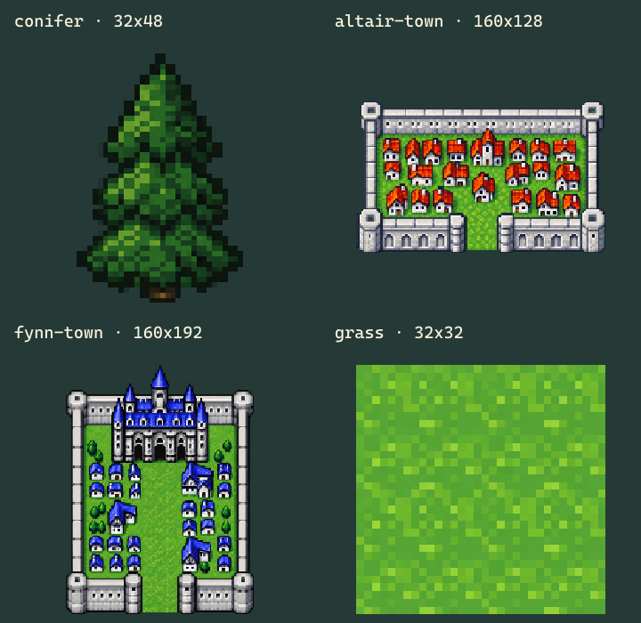

conifer

Layer: vegetation · Anchor: bottom-center · 32×48px
Generated recreations from FFII Pixel Remaster gameplay references. Ground, vegetation and settlement layers are distinct. The game owns collision and portal coordinates.

Layer: vegetation · Anchor: bottom-center · 32×48px

Layer: settlement · Anchor: south gate bottom-center · 160×128px

Layer: settlement · Anchor: south gate bottom-center · 160×192px

Layer: ground · Anchor: top-left · 32×32px